Partial Engine Assembly (2GR-FE) Reassembly |
| 1. Install Engine Rear Oil Seal |
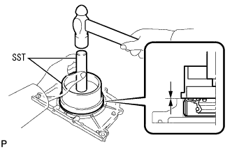 |
Using SST, uniformly tap in a new oil seal until it is flush with the end surface of the engine rear oil seal retainer.
| 2. Install Engine Rear Oil Seal Retainer |
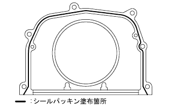 |
Apply seal packing black (approximately 2.0-3.0mm in diameter) to the locations shown in the illustration.
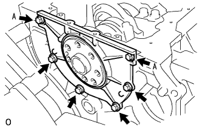 |
Install the engine rear oil seal retainer to the cylinder block with the 6 bolts.
| 3. Install Water Inlet Pipe |
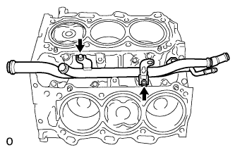 |
Install the water inlet pipe to the cylinder block with the 2 bolts.
Install water bypass pipe No.1 with the clamp.
| 4. Install Cylinder Head Sub-assembly |
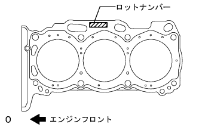 |
Place a new cylinder head gasket on the cylinder block with the lot number facing upward.
Install the cylinder head.
Apply a light coat of engine oil to the threads and seats of the cylinder head bolts.
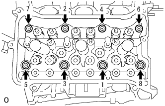 |
Using a double hexagon wrench (10mm), temporarily tighten the 8 cylinder head bolts in several passes in the sequence shown in the illustration, and then tighten them to the specified torque.
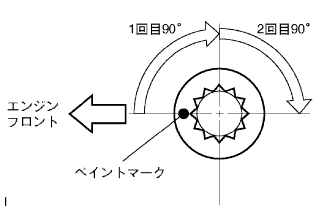 |
Mark the front of the cylinder head bolt heads with paint.
Using the paint marks as a guide, tighten the cylinder head bolts 90° in the tightening sequence. Tighten them an additional 90° in the tightening sequence.
Check that all the paint marks are at the positions tightened 180°.
| 5. Install Cylinder Head LH |
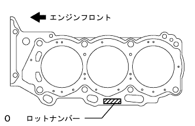 |
Install new cylinder head gasket No.2 to the cylinder block with the lot number facing upward.
Install the cylinder head LH.
Apply a light coat of engine oil to the threads and seats of the cylinder head bolts.
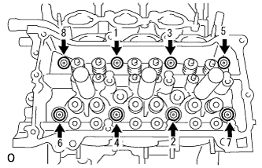 |
Using a double hexagon wrench (10mm), temporarily tighten the 8 cylinder head bolts in several passes in the sequence shown in the illustration, and then tighten them to the specified torque.
Mark the front of the cylinder head bolt heads with paint.
Using the paint marks as a guide, tighten the cylinder head bolts 90° in the tightening sequence. Tighten them an additional 90° in the tightening sequence.
Check that all the paint marks are at the positions tightened 180°.
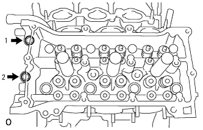 |
Tighten the 2 bolts to the specified torque in the sequence shown in the illustration.
| 6. Install Valve Lash Adjuster Assembly |
 |
Place the lash adjuster in a container filled with engine oil. Using SST, push down the check ball and move the plunger up and down 5-6 times to bleed air from the high-pressure chamber.
Remove the SST and push the tip of the plunger hard and quickly with a finger.
If the plunger moves, bleed the air again.
Place the lash adjuster in a container filled with engine oil and fill the low-pressure chamber of the plunger with oil.
Apply engine oil to the outer circumference of the body and the tip of the plunger, and install the lash adjuster while turning it.
| 7. Install Valve Rocker Arm Sub-assembly NO.1 |
 |
Apply engine oil to the roller of the valve rocker arms, the tips of the lash adjusters and the tops of the valve stem caps, and install the 24 valve rocker arms as shown in the illustration.
| 8. Install Camshaft Bearing Cap |
Apply engine oil to the camshaft journals.
Install the camshaft and camshaft No.2 to the camshaft housing RH.
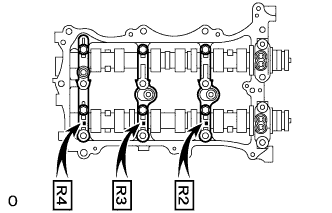 |
Check the marks and numbers on the camshaft bearing caps and place them temporarily.
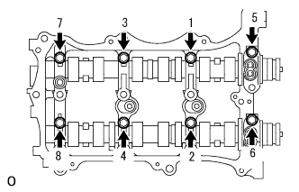 |
Uniformly and temporarily tighten the 9 camshaft bearing cap bolts in the sequence shown in the illustration.
| 9. Install Camshaft Housing Sub-assembly RH |
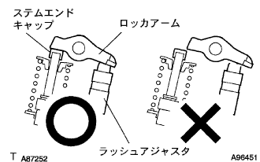 |
Check that the valve rocker arms are properly installed as shown in the illustration.
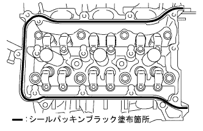 |
Apply seal packing black (3.5-4.5mm in diameter) to the locations shown in the illustration (top surface of cylinder head).
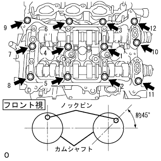 |
Install the camshaft housing RH and uniformly tighten the 12 bolts in the sequence shown in the illustration.
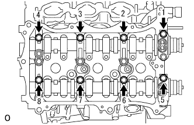 |
Fully tighten the 8 camshaft bearing cap bolts in the sequence shown in the illustration.
| 10. Install Camshaft Bearing Cap |
Apply engine oil to the camshaft journals.
Install camshaft No.3 and camshaft No.4 to the camshaft housing LH.
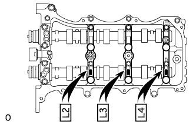 |
Check the marks and numbers on the camshaft bearing caps and place them temporarily.
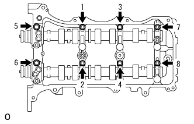 |
Temporarily tighten the 8 camshaft bearing cap bolts in the sequence shown in the illustration.
| 11. Install Camshaft Housing Sub-assembly LH |
Check that the valve rocker arms are properly installed as shown in the illustration.
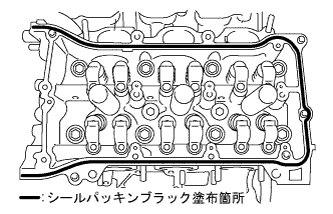 |
Apply seal packing black (3.5-4.5mm in diameter) to the locations shown in the illustration (top surface of cylinder head).
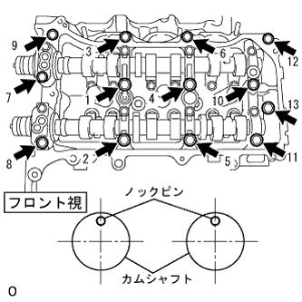 |
Install the camshaft housing LH and uniformly tighten the 13 bolts in the sequence shown in the illustration.
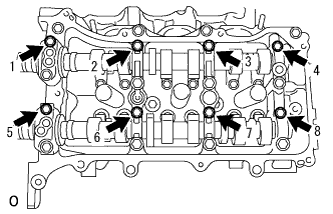 |
Fully tighten the 8 camshaft bearing cap bolts in the sequence shown in the illustration.
| 12. Install Chain Tensioner Assembly NO.2 |
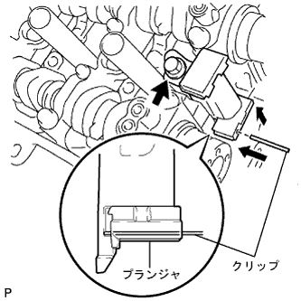 |
Install chain tensioner assembly No.2 to the camshaft housing RH with the bolt.
Push up chain tensioner No.2 and insert a clip into the plunger hole to lock it.
| 13. Install Camshaft Timing Gear and ChainNO.2(RH Bank) |
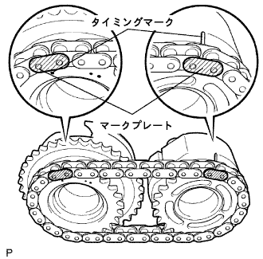 |
Align the mark plates with the timing marks as shown in the illustration, and assemble chain No.2 to the camshaft timing gear assembly.
Align the knock pin of the camshaft with the pin hole of the camshaft timing gear assembly, and assemble the camshaft timing gear assembly and camshaft timing exhaust gear assembly with chain No.2 installed.
Apply a light coat of engine oil to the threads and seats of the bolts.
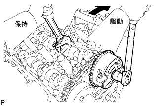 |
Using the service hexagon portion of the camshaft, tighten the camshaft timing gear assembly and camshaft timing exhaust gear with each bolt.
After tightening, check that the camshaft timing gear assembly is locked.
Remove the clip from chain tensioner assembly No.2.
| 14. Install Chain Tensioner Assembly NO.3 |
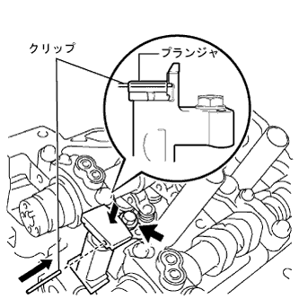 |
Install chain tensioner assembly No.3 to the camshaft housing LH with the bolt.
Push down chain tensioner No.3 and insert a clip into the plunger hole to lock it.
| 15. Install Camshaft Timing Gear and ChainNO.2(LH Bank) |
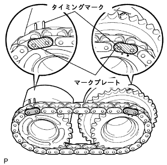 |
Align the mark plates with the timing marks as shown in the illustration, and assemble chain No.2 to the camshaft timing gear assembly.
Align the knock pin of the camshaft with the pin hole of the camshaft timing gear assembly, and assemble the camshaft timing gear assembly and camshaft timing exhaust gear assembly with chain No.2 installed.
Apply a light coat of engine oil to the threads and seats of the bolts.
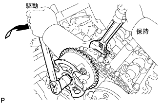 |
Using the service hexagon portion of the camshaft, tighten the camshaft timing gear assembly and camshaft timing exhaust gear with each bolt.
After tightening, check that the camshaft timing gear assembly is locked.
Remove the clip from chain tensioner assembly No.3.
| 16. Install Chain Vibration Damper NO.1 |
 |
Install the chain vibration damper No.1 with the 2 bolts.
| 17. Install Chain Vibration Damper NO.2 |
Install the 2 chain vibration dampers No.2 to each cylinder head.
| 18. Install Crankshaft Timing Gear or Sprocket |
 |
Install the 2 crankshaft timing gear keys to the crankshaft.
Install the crankshaft timing gear to the crankshaft.
| 19. Install Idle Sprocket Assembly |
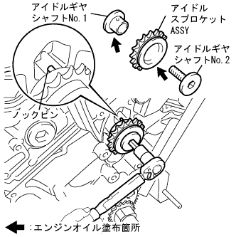 |
Apply engine oil to the sliding parts of idle gear shaft No.1.
Install the idle sprocket assembly to idle gear shaft No.1.
Align the knock pin position and, using socket hexagon wrench 10, install the idle sprocket assembly.
| 20. Install Chain Sub-assembly |
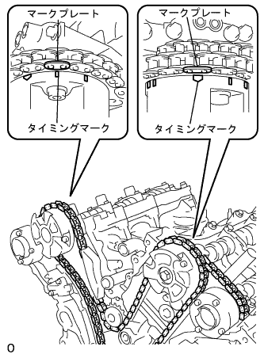 |
Align the mark plates with the timing marks as shown in the illustration, and install the chain.
 |
Do not engage the chain with the crankshaft timing gear; place it on the crankshaft.
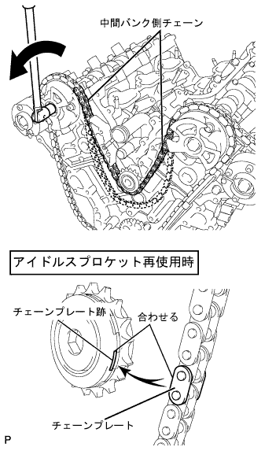 |
Turn the camshaft timing gear assembly on the RH bank counterclockwise to tighten the chain between the banks.
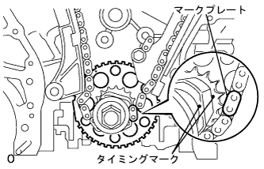 |
Align the mark plate with the timing mark as shown in the illustration, and assemble the chain to the crankshaft timing gear.
Temporarily install the pulley bolt to the crankshaft.
 |
Turn the crankshaft clockwise and align the timing mark with the RH block bore center line (TDC/compression position).
| 21. Install Chain Tensioner Slipper |
Install the chain tensioner slipper.
| 22. Install Chain Tensioner Assembly NO.1 |
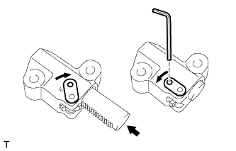 |
Raise the stopper plate to release the plunger lock.
With the lock released, push the plunger in completely.
With the plunger pushed in completely, lower the stopper plate to lock the plunger, and insert a hexagon wrench into the hole of the stopper plate.
 |
Install chain tensioner assembly No.1 with the 2 bolts.
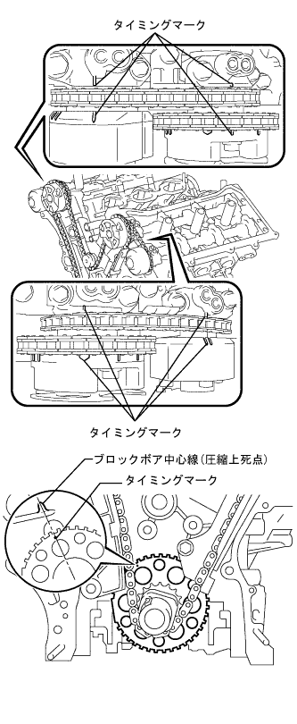 |
Remove the hexagon wrench from chain tensioner assembly No.1, and check each timing mark at the TDC/compression position.
Remove the pulley bolt from the crankshaft.
| 23. Install Timing Gear Case or Timing Chain Case Oil Seal |
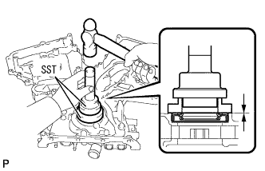 |
Using SST, uniformly tap in a new oil seal until its surface is flush with the edge of the timing chain (belt) cover.
| 24. Install Water Pump Assembly |
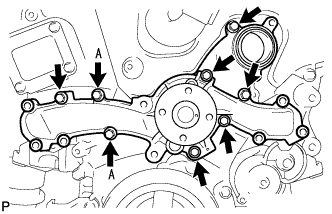 |
Install the water pump assembly with a new gasket and the 8 bolts.
| 25. Install Timing Chain or Belt Cover Sub-assembly |
Before applying seal packing, thoroughly remove any old seal packing from the sealing surfaces.
Using brake cleaner or white gasoline, clean and degrease the contact surfaces of the timing chain (belt) cover, cylinder head and cylinder block so that they are free of oil, water and dirt.
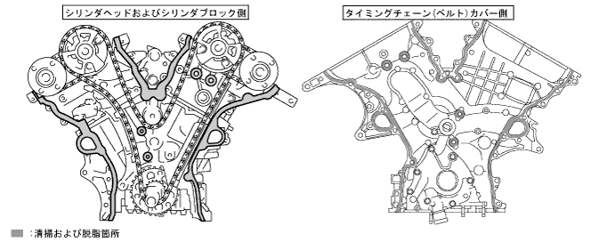
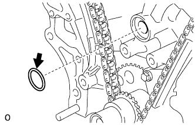 |
Install a new oil pump gasket to the cylinder block.
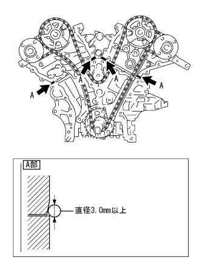 |
Apply seal packing black (for oil areas) to the 4 locations shown in the illustration.
| Seal Packing Used | Bead Diameter |
|---|---|
| Seal Packing Black (for Oil Areas) | 3.0mm or more |
Apply seal packing black (for oil areas) and seal packing 1282B (for water areas) to the locations of the timing chain (belt) cover shown in the illustration.
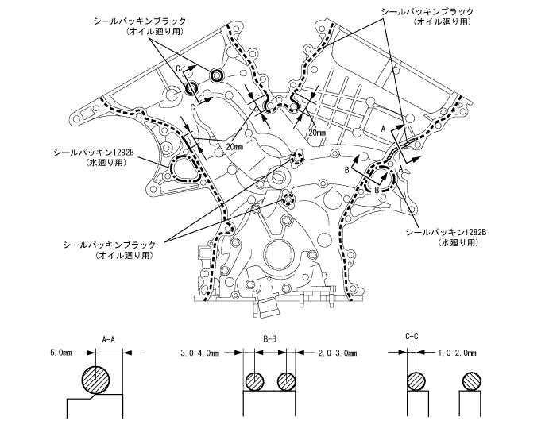
| Line Type | Seal Packing Used | Bead Diameter | Application Location (from Inner Seal Line) |
|---|---|---|---|
| Solid line | Seal Packing Black (for Oil Areas) | 4.5mm or more | 3.0-4.0mm |
| Dotted line | Seal Packing Black (for Oil Areas) | 3.5mm or more | 3.0-4.0mm |
| Dash-dot line | Seal Packing 1282B (for Water Areas) | 3.5mm or more | 2.0-3.0mm |
| Hatched area | Seal Packing Black (for Oil Areas) | 6.0mm or more | 5.0mm |
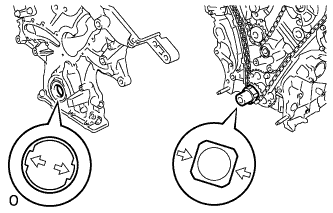 |
Align the width across flats 2 of the oil pump rotor with the width across flats 2 of the crankshaft, and install the timing chain (belt) cover.
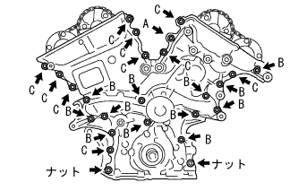 |
Temporarily tighten the timing chain (belt) cover with the 23 bolts and 2 nuts.
| Bolt Type | Bolt Length Under Head [mm] |
|---|---|
| A | 40 |
| B | 55 |
| C | 25 |
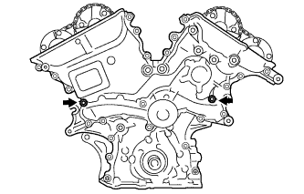 |
Fully tighten the 2 bolts shown in the illustration.
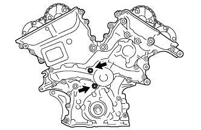 |
Fully tighten the 2 bolts shown in the illustration.
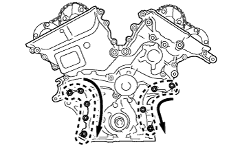 |
Fully tighten the 7 bolts and 2 nuts shown in the illustration.
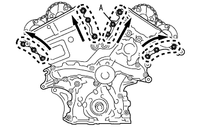 |
Fully tighten the 12 bolts shown in the illustration.
Install the timing chain cover plate to the timing chain (belt) cover with a new gasket and the 4 bolts.
| 26. Install Water Inlet Housing |
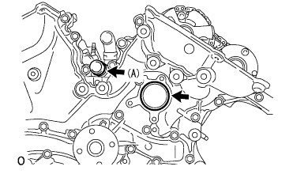 |
Install a new O-ring and new water inlet housing gasket No.1.
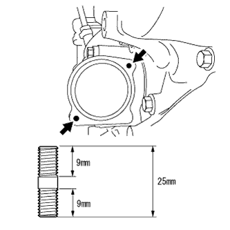 |
Install the 2 stud bolts to the water inlet housing.
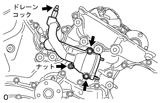 |
Install the water inlet housing with the 2 bolts and nut.
Install the drain cock to the water inlet housing.
Install water bypass pipe No.1 with the clamp.
| 27. Install Water Inlet |
Install new water inlet housing gasket No.2 to the thermostat.
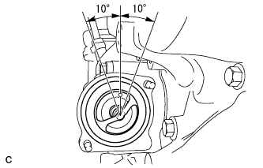 |
Install the thermostat to the water inlet housing with the jiggle valve facing upward.
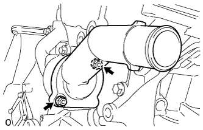 |
Install the water inlet to the water inlet housing with the 2 nuts.
| 28. Install Engine Mounting Bracket Front NO.1 LH |
Using Torx socket wrench E8, install stud bolts A (2 bolts) to engine mounting bracket front No.1 LH.
Using a socket wrench (8mm), install stud bolt B to engine mounting bracket front No.1 LH.
Install engine mounting bracket front No.1 LH with the 6 bolts.
| 29. Install Oil Pan Baffle Plate NO.1 |
Install the oil pan baffle plate to the crank caps and crank cap bolts with the 7 bolts.
| 30. Install Oil Pan Sub-assembly |
Using Torx socket wrench E8, install the 2 stud bolts at the positions shown in the illustration.
Install 2 new O-rings.
Apply seal packing black (3.0-4.0mm in diameter) to the locations shown in the illustration.
Temporarily tighten the 16 bolts and 2 nuts in several passes, and then tighten them to the specified torque.
| 31. Install Oil Strainer Sub-assembly |
Using Torx socket wrench E6, install the 2 stud bolts at the positions shown in the illustration.
 |
Install the oil strainer to the cylinder block and timing chain (belt) cover with a new gasket, the bolt and 2 nuts.
| 32. Install Oil Pan Sub-assembly NO.2 |
Using Torx socket wrench E6, install the 2 stud bolts at the positions shown in the illustration.
Apply seal packing black (3.0-4.0mm in diameter) to the locations shown in the illustration.
 |
Install oil pan No.2 to the oil pan with the 16 bolts and 2 nuts.
| 33. Install Oil Pan Drain Plug |
 |
Install the oil pan drain plug to oil pan No.2 with a new gasket.
| 34. Install Cylinder Head Cover Sub-assembly |
 |
Install 3 new gaskets to camshaft bearing caps (No.1, No.2, No.7).
Install a new cylinder head cover gasket to the cylinder head cover.
Apply seal packing black to the positions shown in the illustration and install the cylinder head cover.
Install the cylinder head cover with new seal washers and the 12 bolts in the sequence shown in the illustration.
Recheck the torque of bolt 1.
| 35. Install Cylinder Head Cover Sub-assembly LH |
Install 3 new gaskets to camshaft bearing caps (No.3, No.4, No.7).
Install a new cylinder head cover gasket LH to the cylinder head cover LH.
Apply seal packing black to the positions shown in the illustration and install the cylinder head cover LH.
Install the cylinder head cover LH with new seal washers and the 12 bolts.
Recheck the torque of bolts 1 and 10.
| 36. Install Water Outlet |
 |
Install 2 new water outlet gaskets and a new O-ring to the water inlet pipe.
 |
Install the water outlet with the 2 bolts and 4 nuts.
| 37. Install Crankshaft Pulley |
Align the key groove of the crankshaft pulley with the pulley key, and install the crankshaft pulley.
Using SST, hold the crankshaft pulley and tighten the pulley bolt.
| 38. Install Oil Filter Element |
Using brake cleaner, clean the inside, threads and O-ring groove of the oil filter cap.
 |
Apply a small amount of engine oil to a new O-ring (for cap) and install it to the oil filter cap.
Set a new oil filter element into the oil filter cap.
Remove any dirt and foreign matter from the installation surface and inside on the engine side.
Apply a small amount of engine oil to the O-ring (for cap) again, and install the oil filter cap.
Using SST, tighten the oil filter cap.
Apply a small amount of engine oil to a new O-ring (for drain plug) and install it to the oil filter cap.
Install the oil filter drain plug to the oil filter cap.
| 39. Install Cylinder Block Water Drain Cock Sub-assembly |
Apply adhesive 1344 to the 2 water drain cocks.
Using a deep socket wrench (14mm), tighten to the specified torque, and then set the pipe of the drain cock facing downward by additional tightening of 1 turn or less.
Install the 2 water drain cock plugs to the water drain cocks.
| 40. Install Oil Pipe NO.1 |
Check that there is no foreign matter, etc. on the mesh of the oil control valve filter LH.
 |
Assemble the oil control valve filter LH to the oil pipe union, and temporarily install oil pipe No.1 (head cover side) with 2 new gaskets.
Temporarily install oil pipe No.1 (cylinder head side) with a new gasket and the oil pipe union.
Tighten the oil pipe union (head cover side).
Tighten the oil pipe union (cylinder head side).
| 41. Install Oil Pipe |
Check that there is no foreign matter, etc. on the mesh of the oil control valve filter RH.
Assemble the oil control valve filter RH to the oil pipe union, and temporarily install the oil pipe (head cover side) with 2 new gaskets.
Temporarily install the oil pipe (cylinder head side) with a new gasket and the oil pipe union.
Tighten the oil pipe union (head cover side).
Tighten the oil pipe union (cylinder head side).
Install the oil pipe with the bolt.
| 42. Install Crankshaft Position Sensor |
 |
Install the crank position sensor to the cylinder block with the bolt.
| 43. Install Camshaft Timing Oil Control Valve Assembly |
Install the 4 camshaft timing oil control valve assemblies to each cylinder head cover with new O-rings and the 4 bolts.
| 44. Install Crank Position Sensor NO.2 |
Install the 4 crank position sensors No.2 to each cylinder head cover with the 4 bolts.
| 45. Install Ventilation Valve Sub-assembly |
Apply adhesive 1324 to the ventilation valve.
Using a deep socket wrench (19mm), install the ventilation valve to the cylinder head cover LH.
| 46. Install Spark Plug |
Install the 6 spark plugs to each cylinder head.
| 47. Install Oil Filler Cap Sub-assembly |
Install a new oil filler cap gasket to the oil filler cap.
Install the oil filler cap to the cylinder head cover LH.